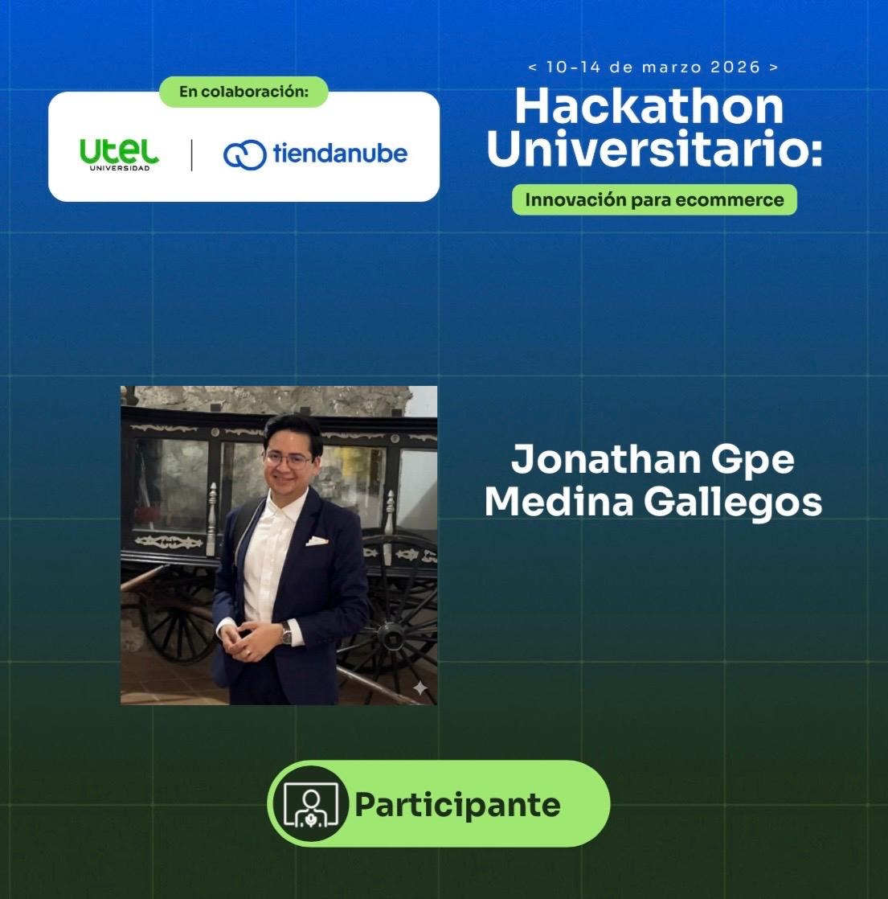
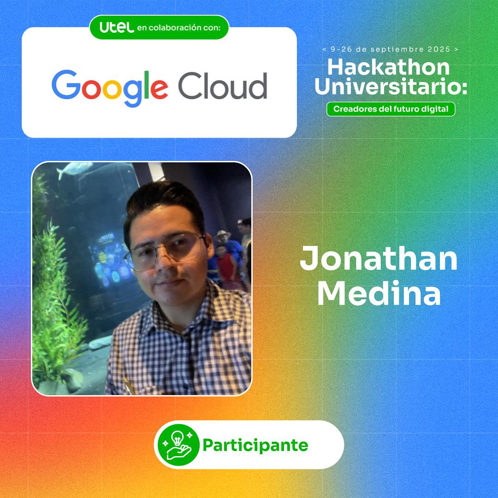
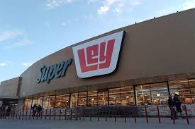
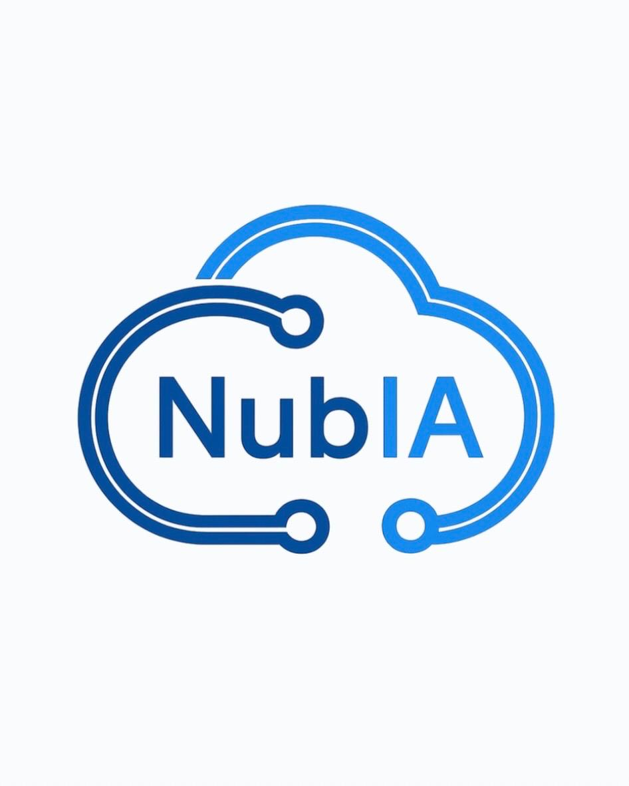

Estrategia y Código en Sinergia
Soy un estratega con mentalidad de desarrollador. Mi formación me permite entender el "porqué" de los negocios, mientras que mi pasión por el desarrollo y la optimización de hardware con Linux me da las herramientas para construir el "cómo". Me enfoco en la optimización de procesos internos y la adaptación ágil a nuevas tecnologías.
Tecnologías & Herramientas
Experiencia y Comunidad
Hackathon - UTEL/Tiendanube
Lead Developer & Project Manager (Marzo 2026)
- Gestión Estratégica: Optimizé el equipo para maximizar agilidad y compromiso, diseñando flujos de trabajo entre IA, Negocios e Infraestructura.
- Tech Lead: Coordiné el despliegue del frontend y la arquitectura del repositorio en GitHub, garantizando la cohesión entre el código y la visión de negocio.
- Optimización con IA: Utilicé Gemini CLI para el desarrollo ágil y la toma de decisiones técnicas bajo presión.
- Arquitectura de Asistente IA: Lideré el desarrollo de "NubIA", un asistente de IA para emprendedores integrado con APIs de última generación.

Hackathon - UTEL/Google Cloud
Participante (Septiembre 2025)
- Gestión de Equipos y Resolución de Conflictos - Gestion de cambios constantes en la integración del equipo, manteniendo la cohesión a través del diálogo y el compromiso grupal.
- Arquitectura de Ideas y Filtrado Jerárquico - Se diseño una estructura de priorización para filtrar propuestas creativas, logrando unificar herramientas diversas y enfoques técnicos distintos en una solución coherente.
- Ejecución y Entrega del Proyecto "AlmaLocal" - Apoye en la entrega en tiempo y forma bajo condiciones de alta presión, gestionando con éxito la logística y la integridad del proyecto sin contar con un repositorio centralizado.

Coordinador De Mesa De Control
CASA LEY, S.A. DE C.V. (2022-2023)
- Supervisión y Control de Operaciones - Coordiné y monitoreé actividades administrativas para garantizar el cumplimiento de procedimientos internos.
- Manejo de Incidencias y Resolución de Problemas - Gestioné y solucioné incidencias operativas, asegurando la continuidad del servicio.
- Comunicación y Reportes Estratégicos - Elaboré informes de desempeño y operatividad para la toma de decisiones a nivel gerencial.

Administrador Del SIRCA (Sistema de rehabastecimiento)
CASA LEY, S.A. DE C.V. (2022)
- Gestión de Inventarios y Control de Datos - Supervise el registro y actualización de productos en el sistema, asegurando la precisión de existencias y movimientos.
- Optimización de Procesos Administrativos - Implementé mejoras en el uso del sistema para agilizar reportes y reducir errores en la operación.
- Comunicación y Reportes Estratégicos - Elaboré informes de desempeño y operatividad para la toma de decisiones a nivel gerencial.
Proyectos Destacados

SaaS Modular Educativo - Marzo 2026
Proyecto NubIA
Plataforma para la democratización del aprendizaje empresarial. Integración de lógica de negocio compleja y consumo de APIs de IA generativa para asistencia en tiempo real a emprendedores.
Hackathon UTEL/Google Cloud - Septiembre 2025
Cloud Innovators
Soluciones escalables en la nube para desafíos corporativos modernos.